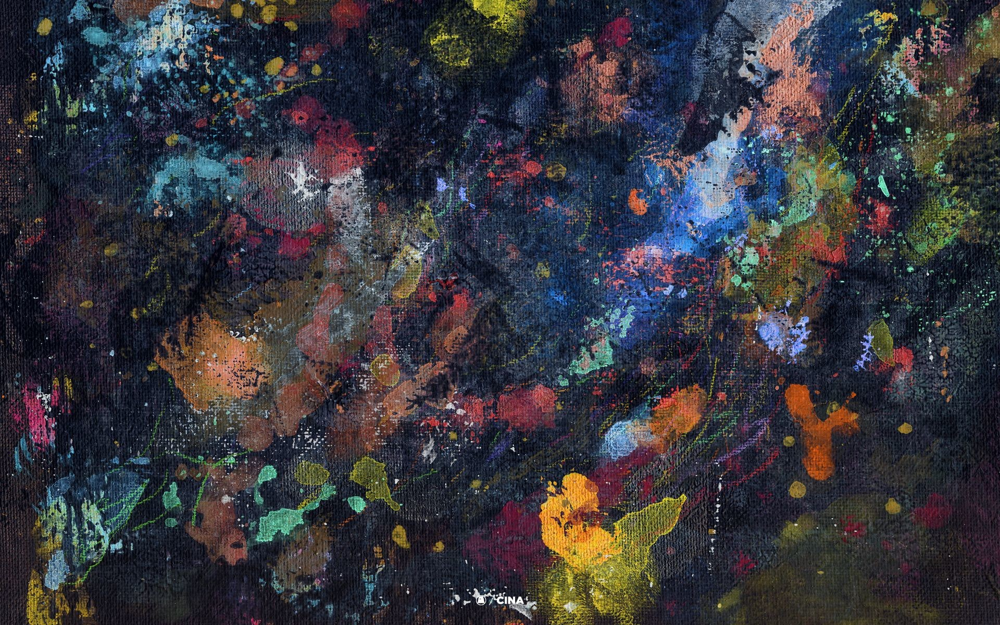
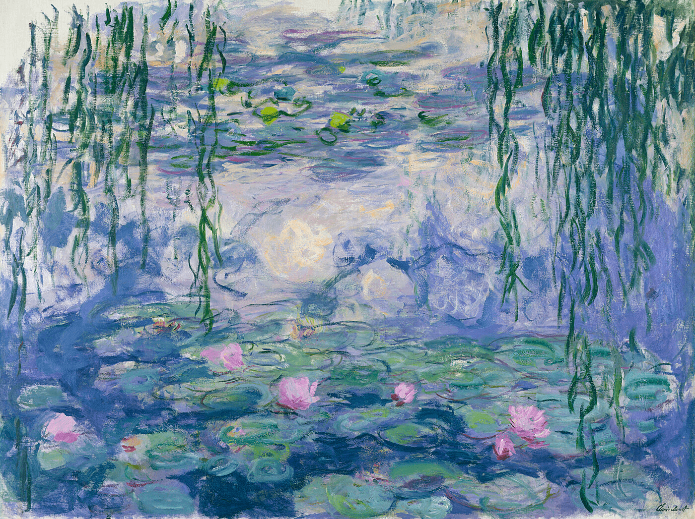
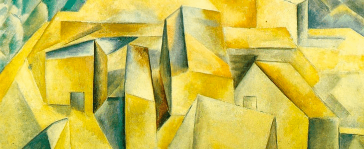
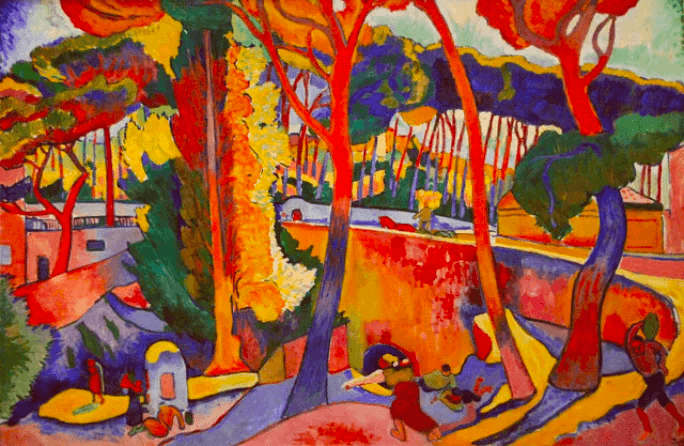
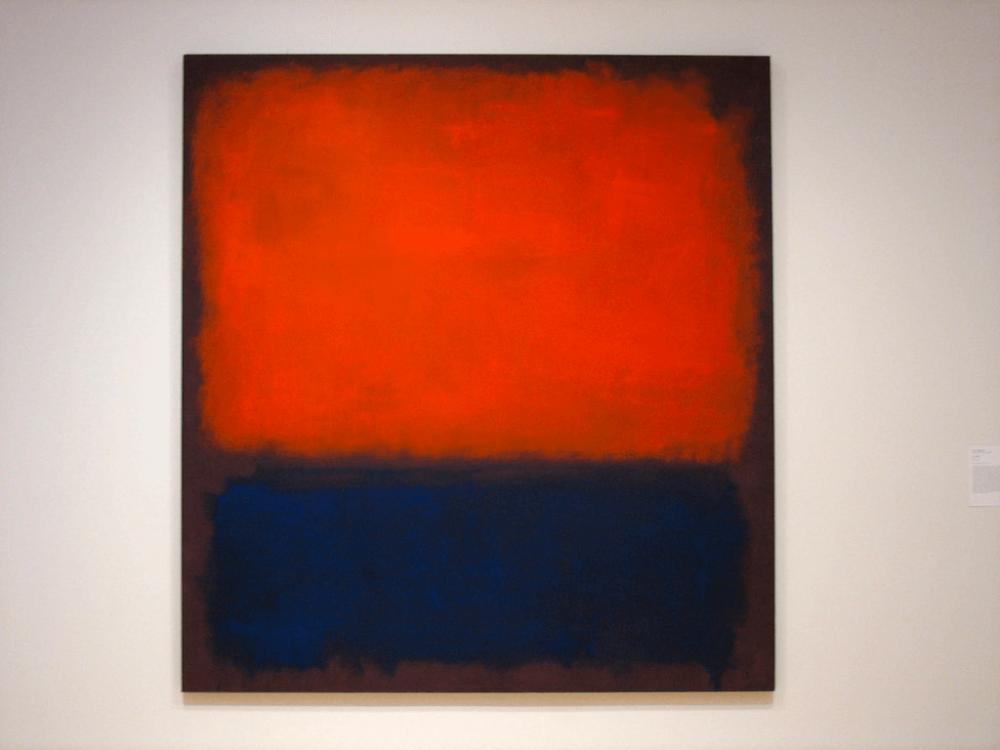

Art has evolved through ages,the evolution of mankind and their way of veiwing things changed significantly with time.Everyone is stuck in their own thoughts ,the art of living the present is known to a very few,constant urge to run after meaningless attries had skyrocketed .In world full of these thoughts having one's own triology of thoughts is never impeccable.In this era of salt air art has always tuned my mind upside down ,learning about art has always been fun .So here I am showcasing the treasure I found out there.Let's dwell into it's past, present & future of what they embodied as mordern art.
Modern art is an art movement that emerged in the late 19th and early 20th centuries. It was characterized by a shift away from traditional styles to a more abstract, experimental approach to creating works of art. Major modern art movements include Impressionism, Expressionism, Cubism, Fauvism, Dadaism and Surrealism. Influential modernist artists include Pablo Picasso, Wassily Kandinsky, Salvador Dalí and Marcel Duchamp. Modern artwork has had a lasting impact on the development of visual culture and continues to influence contemporary art today.
While each movement has its own distinguishing characteristics and qualities, there is a thread that flows through each modern art movement. Its practitioners sought to push the boundaries of traditional art-making techniques and explore new ways of expressing feelings and ideas through visual media. Let’s take a deeper dive into some of the most important modern art movements in art history and some examples of modern art from each.
Impressionism was an art movement that began in France in the late 19th century. It is characterized by its focus on capturing the effects of light and atmosphere, and emphasizes accurate depictions of specific times of day and season. Artists employed brilliant colours, thick brush strokes, high chroma, and vivid light-dark contrasts to create their works.
Cubism is an avant-garde art movement that emerged in the early twentieth century. Pioneered by Pablo Picasso and Georges Braque, it sought to challenge traditional notions of perspective and representation by abstracting forms and reducing them to their most basic shapes.
Fauvism is a style of painting that emerged in early twentieth century France. Characterized by bright, expressive colours and simplified forms, it was pioneered by Henri Matisse and André Derain.
Abstract Expressionism is a style of painting that emerged in post-World War II America. Pioneered by artists such as Jackson Pollock, Mark Rothko and Willem de Kooning, this movement emphasized the artist's emotional and psychological state over representational representation.
Note:This is not mandatory interested people could fill in the details and they are for sure kept secured
go to starting of page 2 3